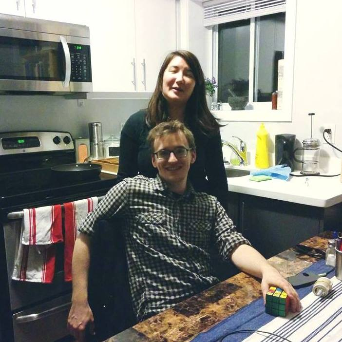

Biography
I grew up in Halifax Nova Scotia, and attended Dalhouse University. For my undergraduate research I worked in the Aerosol and Cloud Group on the link between cosmic ray flux and cloud formation, and improving modelling of sea-salt aerosol production. After completing my BSc I moved into the Quantum Theory Group and worked on translating classical problems of interest (mostly 3-SAT) onto Quantum computers, culminating in my thesis Compiling Programs for an Adiabatic Quantum Computer.
In addition to various stints as a software developer, from 2015-2017 I was the co-founder and lead programmer at Two and Thirty Software working on Hairy Little Buggers. From 2017-2018 I was the technical lead at the Klick Health Media Data Science team. Currently, I consult on ETLs, data science and software development, while also working on SponsorHub.io.
2020-06-16
#poetry
Once I am sure there's nothing going on I step inside, letting the door thud shut. Another church: matting, seats, and stone And little books; sprawlings of flowers, cut For Sunday, brownish now; some brass and stuff Up at the holy end; the small neat organ; And a tense, musty, unignorable silence, Brewed God knows how long. Hatless, I take off My cycle-clips in awkward reverence. Move forward, run my hand around the font.
2018-08-01
#poetry
#burns
O my Luve's like a red, red rose That’s newly sprung in june; O my Luve's like the melodie That’s sweetly play'd in tune: As fair art thou, my bonnie lass, So deep in luve am I: And I will luve thee still, my dear, Till a’ the seas gang dry: Till a’ the seas gang dry, my dear, And the rocks melt wi’ the sun: I will luve thee still, my dear, While the sands o’ life shall run.
2018-03-09
#poetry
#wodehouse
A certain critic - for such men, I may regret to say, do exist - made the nasty remark about my last novel that it contained ‘all the old Wodehouse characters under different names’. He has probably now been eaten by bears, like the children who made mock of the prophet Elisha: but if he still survives he will not be to make a similar charge against Summer Lightning. With my superior intelligence, I have outgeneralled the man this time by putting in all the old Wodehouse characters under the same names.
2017-10-28
#rust
#webdev
#programming
This entry will be a little scattershot, just some miscellaneous thoughts and impressions.
Interacting with APIs It’s a little inconvenient to be making a lot of little structs for each feature of an API; where in JavaScript or Python you would have a dictionary, if you want type safety you need to make a struct with the proper fields. Strictly speaking you don’t need to; operating on untyped JSON is actually fairly straightforward, but when you know that the rest of your codebase isn’t going to crash the parts that aren’t guarenteed by the compiler niggle in your brain.
2017-08-04
#rust
#webdev
#programming
Now that Hairy Little Buggers is wrapped up, I figured I’d use my sabbatical to dive into web-development. This is also a good chance to play with Rust again; the last time I checked it out was before 1.0 when I was playing with the Matasano crypto challenges, so it will be interesting to see how much more mature the ecosystem is.
Now, I don’t really know anything about web-development, so after a little research I picked up Flask Web Development based on the Flask Mega-Tutorial.